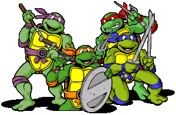

We should probably convert our hello program into a template. You'll need to write this stuff every time you create a program with turtle:
# bring in the turtle moduleimportturtle# create a Screen objectwn=turtle.Screen()# create at least one Turtle object t=turtle.Turtle()# tell your turtle to do stuff here, like... t.forward(200)# tell the Screen object to start the programwn.mainloop()
A Note On Names
in the template, I use t as the variable name for my turtle.
it's just a variable name; it can be anything you want (same with wn, but you have to change wn everywhere you see it)
in fact, in my previous programs, I called the turtle leo, in honor of one of these guys

BTW, I Definitely Encourage You to Follow Along When I Code Up Examples!
Basic Turtle Methods
These are all methods that you can call on your Turtle object.
forward(distance) - move the turtle forward by the specified distance
right(angle) - turn the turtle right by angle degrees
left(angle) - turn the turtle left by angle degrees
back(distance) - move the turtle back by the specified distance
color(colorstring) - change the color of your pen to colorstring, which can be "red", "green", etc.
pensize(size) - change the size of your pen to size
t.color("blue")
Methods you can call on your Screen object
bgcolor(colorstring) - change the background color of your window to colorstring
wn.bgcolor("pink")
Color, Background and Pen Size
importturtlewn=turtle.Screen()t=turtle.Turtle()wn.bgcolor("green")# change the background color to greent.color("yellow")# change the color of the pent.back(100)t.pensize(20)# change the size of the pent.left(45)t.color("blue")# change the color of the pen againt.forward(150)wn.mainloop()
Moving Without Drawing
Methods you can call on your Turtle object:
up() - pick the pen up so that the turtle object doesn't draw when it moves
down() - put the pen down so that the turtle object draws when it moves
t.up()# picks the pen up, doesn't draw when the turtle moves
goto(x, y) - move the turtle to the specified coordinates …x and y. Note that if the pen is down, it will draw up to that coordinate.
t.goto(200,200)# picks the pen up, doesn't draw when the turtle moves
Goto
BTW… what do you think this draws? →
importturtlewn=turtle.Screen()t=turtle.Turtle()# go to the following coordinates... (while drawing!)t.goto(-100,0)t.goto(-100,100)t.goto(-50,150)t.goto(0,100)t.goto(0,0)wn.mainloop()
Let's Use What We Know to Create a Square!
How would we tell the turtle to create a square with the upper left corner at the origin? Each side should be 200px long. We just learned goto, so let's try that.→
importturtleimportrandomwn=turtle.Screen()t=turtle.Turtle()t.color("blue")foriinrange(50):t.pensize(random.randint(1,12))t.goto(random.randint(-300,300),random.randint(-200,200))ifi==25:# change the color once to greent.color("purple")wn.mainloop()
Reviewing Objects and Methods
What's an object and what's a method? →
object - a thing that a variable name can refer to, like a Screen, Turtle, int or str
an object can have methods … things that the object can do
a method is a function that you can call from a particular object
Again a Few Tips for Running Programs
Running these programs (from IDLE or from Terminal!) cause a new window to pop up.
the window usually opens up behind the interactive shell (or Terminal)
if there's an error, the window of your program may hang. demo →
close the interactive shell to get rid of it
…or force quit the window
your prints still show up in the shell, but you'll have to juggle two windows. demo →